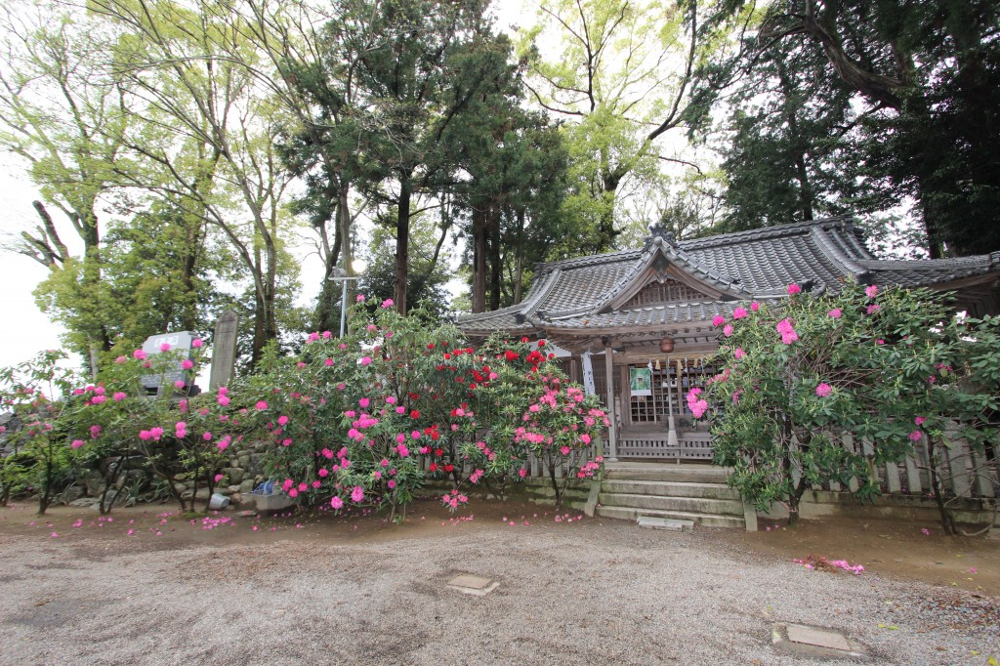
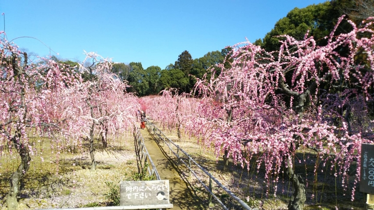
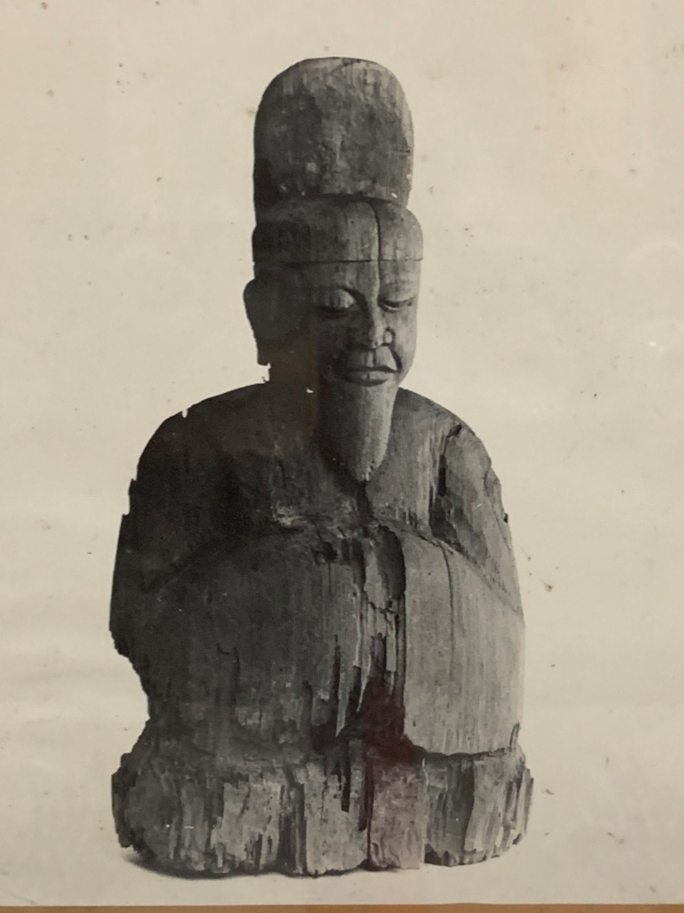
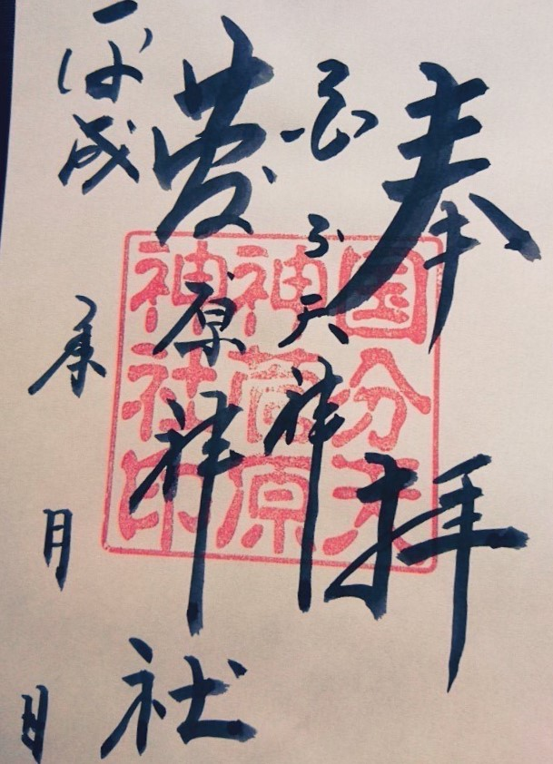
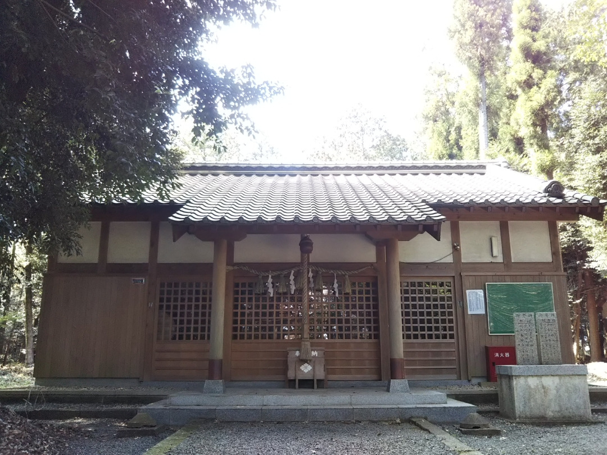

深溝神明社
国分天神 菅原神社
久間田神社
深溝神明社

深溝神明社の境内に石楠花が群生しており境内の中はもちろん，周囲の道路からも見ることができます。
石楠花は4月中旬から5月中旬にかけて見ることができます。
アクセス
三重県鈴鹿市深溝町1772
菅原神社
国分の天神さんと親しまれており，しだれ梅の名所として有名。
鳥居横や境内に植樹されているしだれ梅は約350本にもなり,梅林内を歩けば鮮やかな桃色とほのかな甘い香りに包まれます。
梅の花は２月中旬から３月中旬にかけて見ることができます。
御神体
御朱印
アクセス
三重県鈴鹿市国分町811
久間田神社
弁天祭：江戸中期より続く、弁財天の雨乞いの大太鼓踊りが有名
アクセス
三重県四日市市鹿間町449-1
御祈祷について
御祈願の方は事前にお問合せください。参拝は何時でも可能です
宮司 山野正仁
TEL/FAX:059-374-4100
電話番号:090-7430-3359